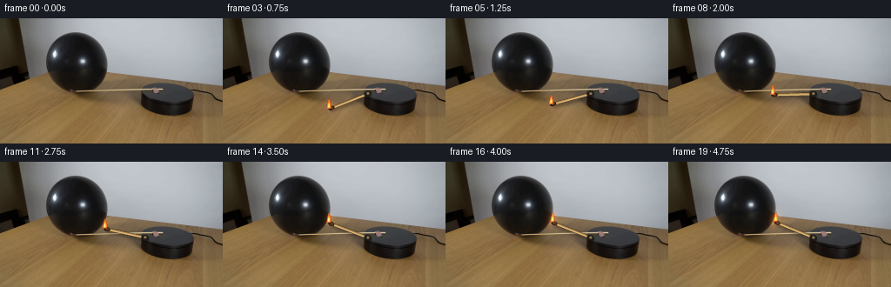
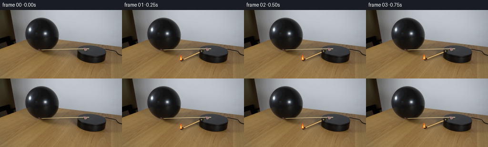

CODING AGENTS AS PIXEL WORLD MODELS
traex/DeepSeek-V4.1-Flash · 0114
点击播放 · 原生 RGB 像素
逐轮保存的候选
回放视频、检查图与代码变化。
每份候选均可单独播放。实际图片检查记录在下方工具轨迹中。
候选 01播放与检查图
点击播放 · 原生 RGB 像素


展开代码变化
--- 上一保存版本
+++ 本次保存版本
@@ -0,0 +1,342 @@
+from __future__ import annotations
+
+import math
+from pathlib import Path
+
+import cv2
+import numpy as np
+from PIL import Image
+
+import artifact_io
+
+
+CASE_DIR = Path(__file__).resolve().parent
+WIDTH = 256
+HEIGHT = 144
+FRAME_COUNT = 20
+FPS = 4
+SCALE = 4
+
+# The match pivots at the left edge of the black platform. In screen
+# coordinates, increasing the angle rotates the match clockwise.
+PIVOT = np.array([166.0, 87.0], dtype=np.float32)
+MATCH_LENGTH = 47.0
+START_ANGLE = 156.0
+CONTACT_ANGLE = 201.5
+CONTACT_START = 15
+
+
+def smoothstep(value: float) -> float:
+ value = float(np.clip(value, 0.0, 1.0))
+ return value * value * (3.0 - 2.0 * value)
+
+
+def unit(angle_degrees: float) -> np.ndarray:
+ angle = math.radians(angle_degrees)
+ return np.array([math.cos(angle), math.sin(angle)], dtype=np.float32)
+
+
+def scaled_point(point: np.ndarray) -> tuple[int, int]:
+ return int(round(float(point[0]) * SCALE)), int(round(float(point[1]) * SCALE))
+
+
+def draw_alpha_line(canvas: np.ndarray, start: np.ndarray, end: np.ndarray,
+ color: tuple[int, int, int], alpha: float, width: float) -> None:
+ layer = np.zeros(canvas.shape[:2], dtype=np.uint8)
+ cv2.line(
+ layer,
+ scaled_point(start),
+ scaled_point(end),
+ int(round(alpha * 255)),
+ max(1, int(round(width * SCALE))),
+ cv2.LINE_AA,
+ )
+ canvas[..., :3] = np.where(
+ layer[..., None] > 0,
+ color,
+ canvas[..., :3],
+ )
+ canvas[..., 3] = np.maximum(canvas[..., 3], layer)
+
+
+def draw_alpha_ellipse(canvas: np.ndarray, center: np.ndarray, axes: tuple[float, float],
+ angle: float, color: tuple[int, int, int], alpha: float) -> None:
+ layer = np.zeros(canvas.shape[:2], dtype=np.uint8)
+ cv2.ellipse(
+ layer,
+ scaled_point(center),
+ (max(1, int(round(axes[0] * SCALE))), max(1, int(round(axes[1] * SCALE)))),
+ angle,
+ 0,
+ 360,
+ int(round(alpha * 255)),
+ -1,
+ cv2.LINE_AA,
+ )
+ canvas[..., :3] = np.where(layer[..., None] > 0, color, canvas[..., :3])
+ canvas[..., 3] = np.maximum(canvas[..., 3], layer)
+
+
+def draw_flame(canvas: np.ndarray, tip: np.ndarray, frame_index: int,
+ motion: float) -> tuple[np.ndarray, np.ndarray]:
+ phase = frame_index * 1.73
+ sway = 0.55 * math.sin(phase) + 0.20 * math.sin(phase * 2.31 + 0.7)
+ sway -= 0.75 * motion
+ base = tip + np.array([sway, -1.0], dtype=np.float32)
+
+ outer = np.array([
+ base + [-2.6, 0.7],
+ base + [-2.0, -3.8],
+ base + [-0.8 + sway * 0.18, -9.0],
+ base + [0.4 + sway * 0.28, -11.2],
+ base + [1.8, -7.2],
+ base + [2.7, -3.0],
+ base + [2.2, 0.4],
+ ], dtype=np.float32)
+ inner = np.array([
+ base + [-1.45, -0.2],
+ base + [-1.1, -3.4],
+ base + [0.15 + sway * 0.12, -7.2],
+ base + [1.2, -4.0],
+ base + [1.35, -1.0],
+ ], dtype=np.float32)
+ core = np.array([
+ base + [-0.55, -1.0],
+ base + [-0.35, -3.7],
+ base + [0.25, -5.2],
+ base + [0.75, -2.6],
+ base + [0.65, -0.8],
+ ], dtype=np.float32)
+
+ pts_outer = np.round(outer * SCALE).astype(np.int32)
+ pts_inner = np.round(inner * SCALE).astype(np.int32)
+ pts_core = np.round(core * SCALE).astype(np.int32)
+
+ layer = np.zeros(canvas.shape[:2], dtype=np.uint8)
+ cv2.fillPoly(layer, [pts_outer], 185)
+ canvas[..., :3] = np.where(layer[..., None] > 0, (255, 104, 20), canvas[..., :3])
+ canvas[..., 3] = np.maximum(canvas[..., 3], layer)
+
+ layer.fill(0)
+ cv2.fillPoly(layer, [pts_inner], 235)
+ canvas[..., :3] = np.where(layer[..., None] > 0, (255, 184, 47), canvas[..., :3])
+ canvas[..., 3] = np.maximum(canvas[..., 3], layer)
+
+ layer.fill(0)
+ cv2.fillPoly(layer, [pts_core], 255)
+ canvas[..., :3] = np.where(layer[..., None] > 0, (255, 241, 174), canvas[..., :3])
+ canvas[..., 3] = np.maximum(canvas[..., 3], layer)
+
+ # Warm halo, returned separately so it can be added to the scene.
+ glow_small = np.zeros((HEIGHT * SCALE, WIDTH * SCALE), dtype=np.float32)
+ glow_large = np.zeros_like(glow_small)
+ cv2.circle(
+ glow_small,
+ scaled_point(base + np.array([0.0, -5.5])),
+ int(5.0 * SCALE),
+ 1.0,
+ -1,
+ cv2.LINE_AA,
+ )
+ cv2.circle(
+ glow_large,
+ scaled_point(base + np.array([0.0, -5.0])),
+ int(10.5 * SCALE),
+ 1.0,
+ -1,
+ cv2.LINE_AA,
+ )
+ glow_small = cv2.GaussianBlur(glow_small, (0, 0), 2.1 * SCALE)
+ glow_large = cv2.GaussianBlur(glow_large, (0, 0), 5.5 * SCALE)
+ glow_small = cv2.resize(glow_small, (WIDTH, HEIGHT), interpolation=cv2.INTER_AREA)
+ glow_large = cv2.resize(glow_large, (WIDTH, HEIGHT), interpolation=cv2.INTER_AREA)
+ return base, glow_small * 0.18 + glow_large * 0.07
+
+
+def render_match_overlay(frame_index: int) -> tuple[np.ndarray, np.ndarray]:
+ if frame_index == 0:
+ return (
+ np.zeros((HEIGHT * SCALE, WIDTH * SCALE, 4), dtype=np.uint8),
+ np.zeros((HEIGHT, WIDTH), dtype=np.float32),
+ )
+
+ motion_t = float(np.clip((frame_index - 1) / (CONTACT_START - 1), 0.0, 1.0))
+ eased = smoothstep(motion_t)
+ angle = START_ANGLE + (CONTACT_ANGLE - START_ANGLE) * eased
+
+ # A tiny clockwise settling motion after first contact.
+ if frame_index >= CONTACT_START:
+ settle = (frame_index - CONTACT_START) / max(1, FRAME_COUNT - 1 - CONTACT_START)
+ angle += 1.1 * settle
+
+ direction = unit(angle)
+ tip = PIVOT + MATCH_LENGTH * direction
+ tail = PIVOT - 1.5 * direction
+ head_center = tip - 2.7 * direction
+ normal = np.array([-direction[1], direction[0]], dtype=np.float32)
+
+ canvas = np.zeros((HEIGHT * SCALE, WIDTH * SCALE, 4), dtype=np.uint8)
+
+ # Soft contact shadow on the tabletop.
+ shadow_shift = np.array([1.7, 2.3], dtype=np.float32)
+ shadow_layer = np.zeros(canvas.shape[:2], dtype=np.uint8)
+ cv2.line(
+ shadow_layer,
+ scaled_point(tail + shadow_shift),
+ scaled_point(head_center + shadow_shift),
+ 80,
+ int(4.6 * SCALE),
+ cv2.LINE_AA,
+ )
+ shadow_layer = cv2.GaussianBlur(shadow_layer, (0, 0), 1.6 * SCALE)
+ canvas[..., :3] = np.where(shadow_layer[..., None] > 0, (19, 12, 7), canvas[..., :3])
+ canvas[..., 3] = np.maximum(canvas[..., 3], shadow_layer)
+
+ # Wooden shaft with a dark edge, warm body and narrow highlight.
+ draw_alpha_line(canvas, tail, head_center, (63, 36, 18), 1.0, 2.75)
+ draw_alpha_line(canvas, tail, head_center, (176, 139, 80), 1.0, 1.75)
+ draw_alpha_line(
+ canvas,
+ tail - normal * 0.45,
+ head_center - normal * 0.45,
+ (223, 188, 126),
+ 0.72,
+ 0.48,
+ )
+
+ # Charred match head and a narrow ash rim.
+ draw_alpha_ellipse(
+ canvas,
+ head_center,
+ (3.4, 2.35),
+ angle,
+ (27, 22, 18),
+ 1.0,
+ )
+ draw_alpha_ellipse(
+ canvas,
+ head_center - direction * 0.6,
+ (1.8, 1.15),
+ angle,
+ (83, 54, 37),
+ 0.72,
+ )
+
+ # The small collar makes the pivot visibly attached to the platform.
+ collar_center = PIVOT - direction * 0.8
+ draw_alpha_ellipse(canvas, collar_center, (4.2, 3.2), angle, (30, 30, 29), 1.0)
+ draw_alpha_ellipse(
+ canvas,
+ collar_center + np.array([0.0, -0.4]),
+ (1.25, 1.25),
+ 0.0,
+ (152, 119, 74),
+ 0.88,
+ )
+
+ flame_base, glow = draw_flame(canvas, tip, frame_index, 0.0)
+
+ # A fine smoke thread is visible only as the flame approaches the balloon.
+ if frame_index >= 11:
+ smoke_strength = float(np.clip((frame_index - 10) / 7.0, 0.0, 1.0))
+ smoke = np.zeros(canvas.shape[:2], dtype=np.uint8)
+ for index in range(4):
+ yy = -12.0 - index * 3.2
+ xx = 0.8 * math.sin(frame_index * 0.91 + index * 1.7) + index * 0.35
+ center = flame_base + np.array([xx, yy], dtype=np.float32)
+ radius = (0.65 + index * 0.38) * SCALE
+ cv2.circle(
+ smoke,
+ scaled_point(center),
+ int(round(radius)),
+ int(round(18 * smoke_strength)),
+ -1,
+ cv2.LINE_AA,
+ )
+ smoke = cv2.GaussianBlur(smoke, (0, 0), 1.8 * SCALE)
+ canvas[..., :3] = np.where(smoke[..., None] > 0, (112, 111, 108), canvas[..., :3])
+ canvas[..., 3] = np.maximum(canvas[..., 3], smoke)
+
+ return canvas, glow
+
+
+def downsample_overlay(canvas: np.ndarray) -> tuple[np.ndarray, np.ndarray]:
+ color = cv2.resize(canvas[..., :3], (WIDTH, HEIGHT), interpolation=cv2.INTER_AREA)
+ alpha = cv2.resize(canvas[..., 3], (WIDTH, HEIGHT), interpolation=cv2.INTER_AREA)
+ return color.astype(np.float32), alpha.astype(np.float32) / 255.0
+
+
+def balloon_contact_light(frame_index: int) -> np.ndarray:
+ if frame_index < CONTACT_START - 2:
+ return np.zeros((HEIGHT, WIDTH), dtype=np.float32)
+
+ strength = float(np.clip((frame_index - (CONTACT_START - 2)) / 4.0, 0.0, 1.0))
+ yy, xx = np.mgrid[0:HEIGHT, 0:WIDTH]
+ distance_sq = ((xx - 121.0) / 8.5) ** 2 + ((yy - 67.0) / 12.0) ** 2
+ halo = np.exp(-distance_sq) * (0.18 * strength)
+
+ # The lit edge gains a warm crescent without changing the balloon silhouette.
+ rim = np.exp(-((xx - 119.5) / 3.0) ** 2 - ((yy - 68.0) / 8.5) ** 2)
+ return (halo + 0.16 * rim * strength).astype(np.float32)
+
+
+def render_frame(source: np.ndarray, frame_index: int) -> np.ndarray:
+ if frame_index == 0:
+ return source.copy()
+
+ canvas, glow = render_match_overlay(frame_index)
+ overlay_color, overlay_alpha = downsample_overlay(canvas)
+
+ frame = source.astype(np.float32)
+ frame = frame * (1.0 - overlay_alpha[..., None]) + overlay_color * overlay_alpha[..., None]
+
+ # Additive warm light behaves like illumination rather than painted orange.
+ frame[..., 0] += glow * 255.0 * 0.34
+ frame[..., 1] += glow * 154.0 * 0.24
+ frame[..., 2] += glow * 61.0 * 0.12
+
+ contact = balloon_contact_light(frame_index)
+ frame[..., 0] += contact * 124.0
+ frame[..., 1] += contact * 53.0
+ frame[..., 2] += contact * 14.0
+
+ # Very subtle fixed-camera sensor texture keeps the synthetic match from
+ # looking pasted onto the photographic frame.
+ rng = np.random.default_rng(8100 + frame_index)
+ noise = rng.normal(0.0, 1.05, size=(HEIGHT, WIDTH, 1)).astype(np.float32)
+ object_weight = np.clip(overlay_alpha + contact * 2.2, 0.0, 1.0)[..., None]
+ frame += noise * object_weight
+
+ return np.clip(np.rint(frame), 0, 255).astype(np.uint8)
+
+
+def main() -> None:
+ source = np.array(Image.open(CASE_DIR / "first_frame.png").convert("RGB"), dtype=np.uint8)
+ if source.shape != (HEIGHT, WIDTH, 3):
+ raise ValueError(f"Unexpected source shape: {source.shape}")
+
+ frames = np.stack([render_frame(source, index) for index in range(FRAME_COUNT)])
+
+ if not np.array_equal(frames[0], source):
+ raise AssertionError("Frame 0 must remain pixel-identical to first_frame.png")
+
+ artifact_io.save(frames, CASE_DIR)
+
+ writer = cv2.VideoWriter(
+ str(CASE_DIR / "video.mp4"),
+ cv2.VideoWriter_fourcc(*"mp4v"),
+ FPS,
+ (WIDTH, HEIGHT),
+ )
+ if not writer.isOpened():
+ raise RuntimeError("Could not open MP4 writer")
+ for frame in frames:
+ writer.write(cv2.cvtColor(frame, cv2.COLOR_RGB2BGR))
+ writer.release()
+
+ print(f"Wrote {len(frames)} RGB frames at {WIDTH}x{HEIGHT}, {FPS} fps")
+ print("Frame 0 is pixel-identical to first_frame.png")
+
+
+if __name__ == "__main__":
+ main()
可观测工具轨迹
实际执行的命令与返回图片。
命令 1exit 0
/bin/bash -c "pwd && rg --files -g '"'!*.mp4'"' -g '"'!*.mov'"' | sed -n '1,200p'"
命令 2exit 0
/bin/bash -c 'cat GENERATION_RULES.md'
命令 3exit 0
/bin/bash -c 'cat prompt.txt'
命令 4exit 0
/bin/bash -c 'ls -la && file first_frame.png 2>/dev/null || true && identify first_frame.png 2>/dev/null || true && ffprobe -version | head -1 && python3 --version'
命令 5exit 0
/bin/bash -c 'cat artifact_io.py'
命令 6exit 0
/bin/bash -c 'cat player_template.html'
命令 7exit 0
/bin/bash -c "python3 - <<'PY'
from PIL import Image
import numpy as np
im=Image.open('first_frame.png').convert('RGB')
a=np.array(im)
print(im.size, im.mode, a.shape, a.dtype)
print('min/max/mean/std', a.min((0,1)), a.max((0,1)), a.mean((0,1)), a.std((0,1)))
# coarse color blocks 32x18, mean rgb and grayscale
for y in range(0,144,8):
row=[]
for x in range(0,256,8):
b=a[y:y+8,x:x+8].mean((0,1))
row.append('%02x%02x%02x'%tuple(b.astype(int)))
print(y, ' '.join(row))
PY"命令 8exit 0
/bin/bash -c "python3 - <<'PY'
from PIL import Image
import numpy as np
im=np.array(Image.open('first_frame.png').convert('RGB')).astype(float)
g=im.mean(2)
# 64x36 ascii, block 4x4
chars=' .:-=+*#%@'
for y in range(0,144,4):
s=''
for x in range(0,256,4):
v=g[y:y+4,x:x+4].mean()
s+=chars[min(len(chars)-1,int(v/256*len(chars)))]
print(f'{y:03d} {s}')
PY"命令 9exit 0
/bin/bash -c "python3 - <<'PY'
try:
import cv2; print('cv2',cv2.__version__)
except Exception as e: print('no cv2',e)
try:
import scipy; print('scipy',scipy.__version__)
except Exception as e: print('no scipy',e)
PY"命令 10exit 0
/bin/bash -c "python3 - <<'PY'
from PIL import Image
import numpy as np
from scipy.ndimage import gaussian_filter
im=np.array(Image.open('first_frame.png').convert('RGB')).astype(float)
g=im.mean(2)
# threshold dark regions in scene x 0-170,y 10-80, print mask ascii at 2x2 with dark<55 and very dark<30
for y in range(12,76,2):
s=''
for x in range(8,176,2):
v=g[y:y+2,x:x+2].mean()
if v<20:c='@'
elif v<35:c='#'
elif v<50:c='O'
elif v<75:c='o'
elif v<105:c='+'
elif v<150:c='-'
elif v<195:c='.'
else:c=' '
s+=c
print(f'{y:03d} {s}')
PY"命令 11exit 0
/bin/bash -c "python3 - <<'PY'
import cv2, numpy as np
from PIL import Image
im=np.array(Image.open('first_frame.png').convert('RGB'))
g=cv2.cvtColor(im,cv2.COLOR_RGB2GRAY)
for th in (25,35,45,60,80):
m=((g<th)&(np.indices(g.shape)[0]<72)).astype('uint8')
n,lab,stats,cent=cv2.connectedComponentsWithStats(m,8)
comps=sorted([(stats[i,cv2.CC_STAT_AREA],stats[i,cv2.CC_STAT_LEFT],stats[i,cv2.CC_STAT_TOP],stats[i,cv2.CC_STAT_WIDTH],stats[i,cv2.CC_STAT_HEIGHT],tuple(np.round(cent[i],1))) for i in range(1,n)], reverse=True)
print('TH',th,comps[:12])
PY"命令 12exit 0
/bin/bash -c "python3 - <<'PY'
from PIL import Image
import numpy as np
im=np.array(Image.open('first_frame.png').convert('RGB'))
# print per pixel colors in key rows as compact chars by quantized rgb
# define categories dark K, skin S, orange O, gray G, white W, brown B
for y in [18,20,22,24,26,28,30,32,34,36,38,40,42,44,46,48,50,52,54,56,58,60,62,64,66,68,70,72,74,76,78,80,84,88,92,96,100,104,108,112,116,120,124,128,132,136,140]:
s=''
for x in range(0,176,2):
r,g,b=im[y:y+1,x:x+2].mean((0,1))
mx=max(r,g,b); mn=min(r,g,b); l=(r+g+b)/3
if l<25: c='@'
elif l<50: c='#'
elif l<80: c='O'
elif l<110: c='o'
elif l<145: c='+'
elif l<180: c='-'
elif l<215: c='.'
else:c=' '
s+=c
print(f'{y:03d} {s}')
PY"命令 13exit 0
/bin/bash -c "python3 - <<'PY'
import cv2,numpy as np
from PIL import Image
im=np.array(Image.open('first_frame.png').convert('RGB'))
hsv=cv2.cvtColor(im,cv2.COLOR_RGB2HSV)
# colored (match flame / tip) pixels: saturation and brightness in scene
for name,m in [('sat>100',hsv[:,:,1]>100),('orange',(hsv[:,:,0]>3)&(hsv[:,:,0]<28)&(hsv[:,:,1]>80)&(hsv[:,:,2]>90)),('brightyellow',(hsv[:,:,0]>10)&(hsv[:,:,0]<35)&(hsv[:,:,1]>80)&(hsv[:,:,2]>130))]:
m[:12]=False;m[82:]=False;m[:,170:]=False
n,lab,stats,cent=cv2.connectedComponentsWithStats(m.astype('uint8'),8)
comps=sorted([(int(stats[i,4]),tuple(map(int,stats[i,:4])),tuple(np.round(cent[i],1))) for i in range(1,n)],reverse=True)
print(name,comps[:20])
PY"命令 14exit 0
/bin/bash -c "python3 - <<'PY'
import cv2,numpy as np
from PIL import Image
im=np.array(Image.open('first_frame.png').convert('RGB'))
R,G,B=[im[:,:,i].astype(int) for i in range(3)]
tests={
'warm_bright':(R>130)&(R>G+8)&(G>B+8)&(G>55),
'yellow':(R>100)&(G>75)&(B<80)&(R>B+35),
'flame':(R>150)&(G>100)&(B<90)&(R>G),
'warm_dark':(R>50)&(R>G+5)&(G>B+5)&(B<70),
}
for name,m in tests.items():
m=m.copy();m[:8]=False;m[84:]=False;m[:,180:]=False
n,lab,stats,cent=cv2.connectedComponentsWithStats(m.astype('uint8'),8)
comps=sorted([(int(stats[i,4]),tuple(map(int,stats[i,:4])),tuple(np.round(cent[i],1))) for i in range(1,n)],reverse=True)
print(name,comps[:30])
PY"命令 15exit 0
/bin/bash -c "python3 - <<'PY'
from PIL import Image
import numpy as np
a=np.array(Image.open('first_frame.png').convert('RGB')).astype(float)
g=a.mean(2)
for th in [25,35,45,60,80,100]:
print('\\nTH',th)
for y in range(10,86,2):
m=g[y]<th
spans=[];on=False
for x,v in enumerate(m):
if v and not on: st=x;on=True
if on and (not v or x==255):
en=x-1 if not v else x
if en-st>=2:spans.append((st,en))
on=False
print(f'{y:3d}:', ' '.join(f'{s}-{e}' for s,e in spans))
PY"命令 16exit 0
/bin/bash -c "python3 - <<'PY'
from PIL import Image
import numpy as np
a=np.array(Image.open('first_frame.png').convert('RGB'))
# print exact colors and neighborhoods around bright flame region x 115-165 y 58-84, compact nearest known colors
for y in range(56,86):
s=''
for x in range(104,176,2):
r,g,b=a[y:y+1,x:x+2].mean((0,1)).astype(int)
# classify red/orange/yellow/white/gray/brown/dark
if r>180 and g>120 and b<130: c='Y'
elif r>120 and g>55 and r>g*1.25 and g>b*1.1: c='R'
elif r>90 and g>60 and b<70: c='r'
elif (r+g+b)/3<40:c='@'
elif (r+g+b)/3<75:c='#'
elif (r+g+b)/3<115:c='o'
elif (r+g+b)/3<160:c='+'
elif (r+g+b)/3<205:c='-'
else:c=' '
s+=c
print(f'{y:3d} {s}')
print('samples')
for y in [60,62,64,66,68,70,72,74,76,78,80,82,84]:
print(y, [(x,tuple(a[y,x])) for x in range(104,176,4)])
PY"命令 17exit 0
/bin/bash -c "python3 - <<'PY'
from PIL import Image
import numpy as np
a=np.array(Image.open('first_frame.png').convert('RGB')).astype(int)
r,g,b=a[:,:,0],a[:,:,1],a[:,:,2]
# categories priority: flame orange/yellow, black/dark, gray low sat, wood brown, beige/tan, white bg
mx=a.max(2); mn=a.min(2); sat=mx-mn; lum=a.mean(2)
flame=(r>110)&(r>g+12)&(g>b+4)&(g>55)
black=lum<45
brown=(r>g+7)&(g>b+10)&(r<175)&(lum<125)
tan=(r>g+8)&(g>b+10)&(r>=175)&(lum<210)
# print crop x96..184 y52..92 1 pixel but every 2x? Use 1 char per pixel, line 88 chars.
for y in range(50,92):
s=''
for x in range(96,184):
if flame[y,x]:c='F'
elif black[y,x]:c='@'
elif brown[y,x]:c='w'
elif tan[y,x]:c='t'
elif lum[y,x]>190:c='.'
elif sat[y,x]<18:c='g'
else:c='o'
s+=c
print(f'{y:03d} {s}')
PY"命令 18exit 0
/bin/bash -c "python3 - <<'PY'
from PIL import Image
import numpy as np
a=np.array(Image.open('first_frame.png').convert('RGB')).astype(int)
r,g,b=a[:,:,0],a[:,:,1],a[:,:,2]
# colors around suspected match stem x105..125 y60..82, list per row median RGB and mean color for x intervals
for y in range(58,84):
vals=[]
for x in range(104,126):
rgb=a[y,x]
# warm, non-table? print selected
if rgb[0]>rgb[1]+8 and rgb[1]>rgb[2]+5:
vals.append((x,tuple(rgb)))
print(y, vals[:20])
PY"命令 19exit 0
/bin/bash -c "python3 - <<'PY'
from PIL import Image
import numpy as np
a=np.array(Image.open('first_frame.png').convert('RGB')).astype(int)
# print RGB at y=76 across x=104..180
for y in [64,68,72,76,80,84]:
print('y',y)
for x in range(104,181,2): print(x,tuple(a[y,x]),end='; ')
print()
PY"命令 20exit 0
/bin/bash -c "python3 - <<'PY'
from PIL import Image
import numpy as np
a=np.array(Image.open('first_frame.png').convert('RGB')).astype(int)
r,g,b=a[:,:,0],a[:,:,1],a[:,:,2]
# print crop with categories: true flame high red vs match stick tan, balloon black, table wood
for y in range(50,92):
s=''
for x in range(96,184):
rr,gg,bb=a[y,x]
lum=(rr+gg+bb)/3
if rr>165 and gg>95 and bb<145 and rr-gg>18: c='F' # bright warm flame / maybe stick?
elif rr>110 and rr>gg+12 and gg>bb+4 and gg>55: c='f'
elif lum<45:c='@'
elif rr>gg+7 and gg>bb+10 and rr<165:c='s' # match wood
elif lum<105:c='w' # table brown
elif lum<150:c='+' # table lighter
elif lum>185:c='.'
else:c=' '
s+=c
print(f'{y:03d} {s}')
PY"命令 21exit 0
/bin/bash -c "python3 - <<'PY'
from PIL import Image
import numpy as np
a=np.array(Image.open('first_frame.png').convert('RGB')).astype(float)
# grid of median lum and r-g at x 100..180 step4 y 52..96 step2
for y in range(52,98,2):
print(f'{y:3d}',end=' ')
for x in range(100,184,4):
p=a[y:y+2,x:x+4].mean((0,1)).astype(int)
# symbolize R-G strength
d=int(p[0]-p[1])
if d>=25:c='R'
elif d>=15:c='r'
elif d>=8:c='o'
elif d>=3:c='.'
else:c=' '
print(c,end='')
print()
PY"命令 22exit 0
/bin/bash -c "python3 - <<'PY'
from PIL import Image
import numpy as np
a=np.array(Image.open('first_frame.png').convert('RGB')).astype(int)
# image coordinate features: boundary of dark blob in rows and x ranges; estimate ellipse/circle fits
import cv2
gray=cv2.cvtColor(a.astype('uint8'),cv2.COLOR_RGB2GRAY)
mask=(gray<70).astype('uint8');mask[:10]=0;mask[86:]=0;mask[:,:48]=0;mask[:,145:]=0
# fill and largest component
n,lab,stats,cent=cv2.connectedComponentsWithStats(mask,8)
i=1+np.argmax(stats[1:,4]); comp=(lab==i).astype('uint8')
contours,_=cv2.findContours(comp,cv2.RETR_EXTERNAL,cv2.CHAIN_APPROX_SIMPLE)
c=max(contours,key=cv2.contourArea)
print('area',cv2.contourArea(c),'bbox',cv2.boundingRect(c),'cent',cent[i])
ellipse=cv2.fitEllipse(c);print('ellipse',ellipse)
# all dark comps excluding blob
PY"命令 23exit 0
/bin/bash -c "python3 - <<'PY'
from PIL import Image
import numpy as np
a=np.array(Image.open('first_frame.png').convert('RGB')).astype(int)
r,g,b=a[:,:,0],a[:,:,1],a[:,:,2]
# classify in scene region; output match/flame candidates excluding likely table by higher sat and R/G ratio, x 105..180 y 55..82
for y in range(55,83):
s=''
for x in range(104,184):
rr,gg,bb=a[y,x]; lum=(rr+gg+bb)/3
if rr>150 and gg>90 and bb<140 and rr-gg>15: c='F'
elif rr>100 and gg>65 and bb<105 and rr-gg>15: c='f'
elif lum<40:c='@'
elif rr>gg+5 and gg>bb+5 and lum<115:c='w'
elif lum<145:c='.'
else:c=' '
s+=c
print(f'{y:03d} {s}')
PY"命令 24exit 0
/bin/bash -c "python3 - <<'PY'
from PIL import Image
import numpy as np
a=np.array(Image.open('first_frame.png').convert('RGB')).astype(int)
for y in range(58,84):
s=''
for x in range(108,126):
rr,gg,bb=a[y,x]; d=rr-gg
if d>=22:c='R'
elif d>=15:c='r'
elif d>=8:c='o'
elif d>=3:c='.'
elif (rr+gg+bb)/3<40:c='@'
elif (rr+gg+bb)/3<80:c='#'
else:c=' '
s+=c
print(y, s)
PY"命令 25exit 0
/bin/bash -c "python3 - <<'PY'
from PIL import Image
import numpy as np
a=np.array(Image.open('first_frame.png').convert('RGB')).astype(int)
for y in range(56,85):
s=''
for x in range(120,176):
rr,gg,bb=a[y,x]; d=rr-gg
if d>=22:c='R'
elif d>=15:c='r'
elif d>=8:c='o'
elif d>=3:c='.'
elif (rr+gg+bb)/3<40:c='@'
elif (rr+gg+bb)/3<80:c='#'
elif (rr+gg+bb)/3<120:c='+'
else:c=' '
s+=c
print(f'{y:3d} {s}')
PY"命令 26exit 0
/bin/bash -c "python3 - <<'PY'
from PIL import Image
import numpy as np
a=np.array(Image.open('first_frame.png').convert('RGB')).astype(float)
# print RGB quantized as 4-bit hex across 16x8 blocks x96-192 y48-96 to see geometry
for y in range(48,96,4):
print(f'{y:3d}',end=' ')
for x in range(96,192,4):
p=a[y:y+4,x:x+4].mean((0,1)).astype(int)
# map to dominant category rgb
if p[0]>p[1]*1.25 and p[1]>p[2]*1.1: c='R'
elif p.mean()<45:c='K'
elif p[0]>p[1]+5 and p[1]>p[2]+8 and p[0]<160:c='w'
elif p.mean()<120:c='d'
elif p.mean()<170:c='g'
else:c='L'
print(c,end='')
print()
PY"命令 27exit 0
/bin/bash -c "python3 - <<'PY'
from PIL import Image
import numpy as np
a=np.array(Image.open('first_frame.png').convert('RGB')).astype(float)
# per-row dark run of main blob in x50:140 threshold 65
for y in range(14,86):
g=a[y].mean(1); m=g<65
# longest run in x 45:145
xs=np.where(m[45:145])[0]+45
if len(xs):
runs=[];st=xs[0];pr=xs[0]
for x in xs[1:]:
if x>pr+1:runs.append((st,pr));st=x
pr=x
runs.append((st,pr))
print(y,runs)
PY"命令 28exit 0
/bin/bash -c "python3 - <<'PY'
from PIL import Image
import numpy as np
a=np.array(Image.open('first_frame.png').convert('RGB')).astype(float)
for y in [60,64,68,72,76,80,84,88,92,96,100,104,108,112,116,120,124,128,132,136,140]:
print('y',y)
# colors for x segments 120-170
for x in [120,128,136,144,152,160,168,176,184,192,200,208,216,224,232,240,248]:
print(x,tuple(a[y,x].astype(int)),end='; ')
print()
PY"命令 29exit 0
/bin/bash -c "python3 - <<'PY'
import cv2, numpy as np
from PIL import Image
a=np.array(Image.open('first_frame.png').convert('RGB')).astype(float)
# estimate balloon shape via threshold and contour, print edge points every few y
g=a.mean(2); m=(g<70)
for y in range(16,84,2):
xs=np.where(m[y,45:145])[0]+45
if len(xs):
print(y, int(xs.min()),int(xs.max()), 'gaps',[(int(x),int(x2)) for x,x2 in zip(xs[:-1],xs[1:]) if x2>x+1][:6])
PY"命令 30exit 0
/bin/bash -c "python3 - <<'PY'
from PIL import Image
import numpy as np
a=np.array(Image.open('first_frame.png').convert('RGB')).astype(float)
# best-fit ellipse to boundary points from dark run using cv2
import cv2
g=a.mean(2);m=(g<70).astype('uint8');m[:16]=0;m[84:]=0;m[:,:45]=0;m[:,140:]=0
n,lab,stats,cent=cv2.connectedComponentsWithStats(m,8);i=1+np.argmax(stats[1:,4]);comp=(lab==i).astype('uint8')
# contour includes maybe body; fit ellipse
c=max(cv2.findContours(comp,cv2.RETR_EXTERNAL,cv2.CHAIN_APPROX_SIMPLE)[0],key=cv2.contourArea)
print(cv2.fitEllipse(c))
PY"命令 31exit 0
/bin/bash -c "python3 - <<'PY'
from PIL import Image
import numpy as np
a=np.array(Image.open('first_frame.png').convert('RGB')).astype(float)
# classify dark black parts by texture (mean/stdev local 5x5) in main blob; detect shiny top right and dark left
for y in range(18,84,4):
print(f'{y:2d}',end=' ')
for x in range(50,126,4):
b=a[y:y+4,x:x+4].mean((0,1)); l=b.mean(); sd=a[y:y+4,x:x+4].std()
if l<25:c='@'
elif l<50:c='#'
elif l<80:c='O'
elif l<115:c='o'
elif l<150:c='+'
else:c=' '
print(c,end='')
print()
PY"命令 32exit 0
/bin/bash -c "python3 - <<'PY'
from PIL import Image
import numpy as np
a=np.array(Image.open('first_frame.png').convert('RGB')).astype(int)
# list exact bright flame-ish components over x100:180 y55:82 using strict color
r,g,b=a[:,:,0],a[:,:,1],a[:,:,2]
for th in [(100,60,100),(110,70,110),(120,75,120),(130,80,130),(140,90,140)]:
R,G,B=th;m=(r>R)&(g>G)&(b<B)&(r-g>15)
m[:55]=False;m[83:]=False;m[:,:100]=False;m[:,180:]=False
import cv2
n,lab,stats,c=cv2.connectedComponentsWithStats(m.astype('uint8'),8)
print(th,sorted([(stats[i,4],stats[i,:4].tolist()) for i in range(1,n)],reverse=True)[:6])
PY"命令 33exit 0
/bin/bash -c "python3 - <<'PY'
from PIL import Image
import numpy as np
a=np.array(Image.open('first_frame.png').convert('RGB')).astype(int)
r,g,b=a[:,:,0],a[:,:,1],a[:,:,2]
# difference R-G maps for y 60-82 x 100-180 in 2x1 block
for y in range(58,84):
s=''
for x in range(100,182,2):
p=a[y:y+1,x:x+2].mean((0,1)).astype(int);d=p[0]-p[1]
c= 'X' if d>60 else 'H' if d>35 else 'R' if d>25 else 'r' if d>18 else 'o' if d>10 else '.' if d>4 else '@' if p.mean()<50 else ' '
s+=c
print(f'{y:3d} {s}')
PY"命令 34exit 0
/bin/bash -c "python3 - <<'PY'
import cv2,numpy as np
from PIL import Image
a=np.array(Image.open('first_frame.png').convert('RGB'))
# find Hough lines on edge in match/flame region, output lines
crop=a[56:86,100:184]
g=cv2.cvtColor(crop,cv2.COLOR_RGB2GRAY)
e=cv2.Canny(g,30,80)
lines=cv2.HoughLinesP(e,1,np.pi/180,threshold=12,minLineLength=8,maxLineGap=3)
print(lines[:,0] if lines is not None else None)
PY"命令 35exit 0
/bin/bash -c "python3 - <<'PY'
from PIL import Image
import numpy as np
a=np.array(Image.open('first_frame.png').convert('RGB')).astype(int)
# print rows x105..130 y55..85 RGB compact numeric tuples
for y in range(55,86):
vals=[]
for x in range(105,130):
r,g,b=a[y,x]
if r-g>8 or (r+g+b)/3<35:
vals.append((x,r,g,b))
print(y, vals)
PY"命令 36exit 0
/bin/bash -c "python3 - <<'PY'
from PIL import Image
import numpy as np
a=np.array(Image.open('first_frame.png').convert('RGB')).astype(int)
# print grayscale text crop x104:136 y58:86, chars via exact luminance
chars='@%#*+=-:. '
for y in range(56,87):
s=''
for x in range(104,137):
v=a[y,x].mean()
s+=chars[min(9,int(v/256*10))]
print(f'{y:3d} {s}')
PY"命令 37exit 0
/bin/bash -c "python3 - <<'PY'
from PIL import Image
import numpy as np
a=np.array(Image.open('first_frame.png').convert('RGB')).astype(int)
# mean colors of areas
for name,(x0,y0,x1,y1) in {
'balloon_left':(60,30,80,60),'balloon_mid':(85,35,100,55),'balloon_right':(100,30,115,55),
'platform':(75,60,115,82),'table_light':(170,100,220,135),'table_mid':(120,95,160,130),
'bg_right':(160,20,250,60),'bg_left':(40,0,80,20),'stick':(120,66,150,76),'flame':(125,63,155,72)
}.items():
b=a[y0:y1,x0:x1];print(name,tuple(np.round(b.mean((0,1)),1)),tuple(np.round(b.std((0,1)),1)), 'minmax', b.min(),b.max())
PY"命令 38exit 0
/bin/bash -c "python3 - <<'PY'
from PIL import Image
import numpy as np
a=np.array(Image.open('first_frame.png').convert('RGB')).astype(int)
# average rgb at exact x,y region clusters using kmeans on crop 100:185,55:85 k=6
import cv2
c=a[55:85,100:185].reshape(-1,3).astype(np.float32)
crit=(cv2.TERM_CRITERIA_EPS+cv2.TERM_CRITERIA_MAX_ITER,50,.2)
_,lab,cen=cv2.kmeans(c,8,None,crit,10,cv2.KMEANS_PP_CENTERS)
print(cen)
for i,c0 in enumerate(cen):
m=(lab[:,0]==i).reshape(30,85)
ys,xs=np.where(m)
print(i,'n',len(xs),'bbox', (xs.min()+100,ys.min()+55,xs.max()+100,ys.max()+55),'cent',(xs.mean()+100,ys.mean()+55), 'col',c0.astype(int))
PY"命令 39exit 0
/bin/bash -c "python3 - <<'PY'
from PIL import Image
import numpy as np
a=np.array(Image.open('first_frame.png').convert('RGB')).astype(float)
# fit ellipse to balloon dark boundary from left dark blob x50:125 y17:83; output residual for possible ellipse x0,y0,rx,ry angle
import cv2
g=a.mean(2)
# manually generate edge points at dark region per row threshold 70; choose leftmost/rightmost but exclude platform (y>=50), use threshold dark to estimate balloon edge
pts=[]
for y in range(16,82):
xs=np.where(g[y,50:130]<70)[0]+50
if len(xs):
# exclude platform by choosing upper/outer; rightmost is balloon, leftmost too
pts.append((xs.min(),y));pts.append((xs.max(),y))
# for upper y<50, use outer; below 50 rightmost is balloon, leftmost maybe platform
pts=np.array([(x,y) for x,y in pts if not (y>=52 and x<70)])
print(cv2.fitEllipse(pts.reshape(-1,1,2).astype('float32')))
PY"命令 40exit 0
/bin/bash -c "python3 - <<'PY'
from PIL import Image
import numpy as np
a=np.array(Image.open('first_frame.png').convert('RGB')).astype(int)
# print x=95..125 values at y=48..64 to detect rod between balloon/platform
for y in range(46,68):
print(y, ' '.join(f'{x}:{tuple(a[y,x])}' for x in range(92,126,3)))
PY"命令 41exit 0
/bin/bash -c "python3 - <<'PY'
from PIL import Image
import numpy as np
a=np.array(Image.open('first_frame.png').convert('RGB')).astype(float)
# Compute global background best smooth approximation by inpainting? print corner and right stats per y
for y in range(0,144,8):
print(y, 'left',tuple(a[y,0:8].mean(0).astype(int)), 'midtop',tuple(a[y,170:180].mean(0).astype(int)), 'right',tuple(a[y,248:256].mean(0).astype(int)))
PY"命令 42exit 0
/bin/bash -c "python3 - <<'PY'
from PIL import Image
import numpy as np
a=np.array(Image.open('first_frame.png').convert('RGB')).astype(float)
# make background mask candidates: assume static and preserve all except x 45:150 y 15:85 plus maybe flame. inspect image colors by simple nearest neighbor to smoothed version using cv2 inpaint from dark/warm mask
import cv2
b=a.astype('uint8')
# region mask: dark or warm in scene and x<150, y<86
r,g,bb=[b[:,:,i].astype(int) for i in range(3)]
mask=((b.mean(2)<100)&(np.indices(b.shape[:2])[0]<88)&(np.indices(b.shape[:2])[1]<150)) | ((r>g+8)&(g>bb+5)&(np.indices(b.shape[:2])[0]<86)&(np.indices(b.shape[:2])[1]<190))
# visualize mask as ascii 2x2
for y in range(0,90,2):
s=''
for x in range(0,200,2): s+= '#' if mask[y:y+2,x:x+2].any() else ' '
print(f'{y:3d} {s}')
PY"命令 43exit 0
/bin/bash -c "python3 - <<'PY'
from PIL import Image
import numpy as np
a=np.array(Image.open('first_frame.png').convert('RGB')).astype(float)
# Find vertical support/rod under balloon: print threshold dark runs y 74-110 x50:180
for y in range(74,112,2):
m=a[y].mean(1)<55
xs=np.where(m[:200])[0]
runs=[]
if len(xs):
st=pr=xs[0]
for x in xs[1:]:
if x>pr+1:runs.append((st,pr));st=x
pr=x
runs.append((st,pr))
print(y,runs)
PY"命令 44exit 0
/bin/bash -c "python3 - <<'PY'
from PIL import Image
import numpy as np
a=np.array(Image.open('first_frame.png').convert('RGB')).astype(float)
# inspect color classifications / geometry around black stand right side x145:215 y70:115
for y in range(70,116,2):
s=''
for x in range(140,220,2):
p=a[y:y+2,x:x+2].mean((0,1)); lum=p.mean()
if lum<30:c='@'
elif lum<55:c='#'
elif lum<85:c='O'
elif lum<115:c='o'
elif lum<145:c='+'
elif lum<175:c='-'
elif lum<205:c='.'
else:c=' '
s+=c
print(f'{y:3d} {s}')
PY"命令 45exit 0
/bin/bash -c "python3 - <<'PY'
from PIL import Image
import numpy as np
a=np.array(Image.open('first_frame.png').convert('RGB')).astype(float)
# horizontal rows RGB x160-220 y80-112 in 2px blocks
for y in range(78,114,2):
print(f'{y:3d}',end=' ')
for x in range(155,222,3):
p=a[y:y+2,x:x+3].mean((0,1)).astype(int)
print('%02x%02x%02x'%tuple(p),end=' ')
print()
PY"命令 46exit 0
/bin/bash -c "python3 - <<'PY'
from PIL import Image
import numpy as np
a=np.array(Image.open('first_frame.png').convert('RGB')).astype(int)
# find pale, low-sat rounded region in table; print pixels with lum>145 and sat<35 in x150:240 y75:120
for y in range(74,118,2):
s=''
for x in range(145,242,2):
p=a[y:y+2,x:x+2].mean((0,1)); mx=p.max();mn=p.min()
if mx-mn<35 and p.mean()>145:c='P'
elif mx-mn<35 and p.mean()>100:c='p'
elif p.mean()<45:c='@'
elif p.mean()<80:c='#'
else:c='.'
s+=c
print(f'{y:3d} {s}')
PY"命令 47exit 0
/bin/bash -c "python3 - <<'PY'
from PIL import Image
import numpy as np
a=np.array(Image.open('first_frame.png').convert('RGB')).astype(int)
# values around pale region x165:205 y78:112
for y in range(78,114,2):
print(f'{y:3d}',end=' ')
for x in range(162,210,3):
p=a[y:y+2,x:x+3].mean((0,1)).astype(int); print('%02x%02x%02x'%tuple(p),end=' ')
print()
PY"命令 48exit 0
/bin/bash -c "python3 - <<'PY'
from PIL import Image
import numpy as np
a=np.array(Image.open('first_frame.png').convert('RGB')).astype(int)
# classify balloon texture: black pixels on right are flat; left gradient. output edges using sobel and magnitude text
import cv2
g=cv2.cvtColor(a.astype('uint8'),cv2.COLOR_RGB2GRAY)
e=cv2.Sobel(g,cv2.CV_32F,1,0,ksize=3)
for y in range(16,84,2):
s=''
for x in range(48,126,2):
v=np.abs(e[y:y+2,x:x+2]).mean()
if v>120:c='#'
elif v>70:c='O'
elif v>35:c='o'
elif v>15:c='.'
else:c=' '
s+=c
print(f'{y:2d} {s}')
PY"命令 49exit 0
/bin/bash -c "python3 - <<'PY'
from PIL import Image
import numpy as np
a=np.array(Image.open('first_frame.png').convert('RGB')).astype(int)
# list mean rgb + sd in masks: balloon core, table top, background, platform. build local classification
for name,box in {'balloon_core':(75,30,112,70),'balloon_left':(55,40,75,65),'balloon_right':(105,40,120,65),'platform':(72,60,112,82),'standtop':(170,75,215,110),'background':(150,0,250,50),'table':(180,100,250,140),'rod':(100,48,125,56)}.items():
x0,y0,x1,y1=box;p=a[y0:y1,x0:x1].reshape(-1,3)
print(name,'mean',p.mean(0).round(1),'p10',np.percentile(p,10,axis=0).round(1),'p50',np.percentile(p,50,axis=0).round(1),'p90',np.percentile(p,90,axis=0).round(1))
PY"命令 50exit 0
/bin/bash -c "python3 - <<'PY'
from PIL import Image
im=Image.open('first_frame.png')
print(im.info)
print(im.getexif())
PY"命令 51exit 0
/bin/bash -c "python3 - <<'PY'
from PIL import Image
import numpy as np
a=np.array(Image.open('first_frame.png').convert('RGB')).astype(float)
# print color at x100..190 y75..95 with nearest color category for table/top; find horizontal shelf edge row variance
for y in range(70,100):
row=a[y,130:240]
print(y,'mean',tuple(row.mean(0).round(1)),'sd',tuple(row.std(0).round(1)))
PY"命令 52exit 0
/bin/bash -c "python3 - <<'PY'
from PIL import Image
import numpy as np
a=np.array(Image.open('first_frame.png').convert('RGB')).astype(int)
# probe around flame region for saturated bright candidates all channels, print max pixel and top colors
c=a[55:84,104:184].reshape(-1,3)
s=c.max(1)-c.min(1); lum=c.mean(1)
idx=np.argsort(s+0.5*lum)[-30:]
print(c[idx])
print('top lum')
idx=np.argsort(lum)[-30:];print(c[idx])
PY"命令 53exit 0
/bin/bash -c "python3 - <<'PY'
from PIL import Image
import numpy as np
a=np.array(Image.open('first_frame.png').convert('RGB')).astype(int)
# at y62..82 find x with high saturation warm but exclude table by R>110 etc
for y in range(60,84):
xs=[]
for x in range(100,185):
r,g,b=a[y,x]
if r>105 and g>55 and b<125 and r-g>20 and g-b>5: xs.append(x)
if xs:print(y,min(xs),max(xs),len(xs),[(x,tuple(a[y,x])) for x in xs[::max(1,len(xs)//5)]])
PY"命令 54exit 0
/bin/bash -c "python3 - <<'PY'
from PIL import Image
import numpy as np
a=np.array(Image.open('first_frame.png').convert('RGB')).astype(int)
# print every pixel x116-150 y58-72 as char based on R-G, with R,G,B perhaps use color hex 2x2
for y in range(56,76):
print(y,' '.join('%02x%02x%02x'%tuple(a[y,x]) for x in range(116,152,2)))
PY"命令 55exit 0
/bin/bash -c "python3 - <<'PY'
from PIL import Image
import numpy as np
a=np.array(Image.open('first_frame.png').convert('RGB')).astype(int)
# rows: inspect x 95..145 y 40..90 average colors in 2px bins, identify wooden match via low blue
for y in range(40,91):
s=''
for x in range(95,146):
r,g,b=a[y,x]
if (r+g+b)/3<40:c='@'
elif r-g>18 and g-b>18 and r<170:c='M' # wood warm
elif r-g>10 and g-b>10 and r<170:c='m'
elif (r+g+b)/3<80:c='#'
elif (r+g+b)/3<130:c='+'
elif (r+g+b)/3<180:c='.'
else:c=' '
s+=c
print(f'{y:3d} {s}')
PY"命令 56exit 0
/bin/bash -c "python3 - <<'PY'
from PIL import Image
import numpy as np
a=np.array(Image.open('first_frame.png').convert('RGB')).astype(int)
# Find table horizontal edge, print row average in right background/table zones
for y in range(60,100):
print(y,'x170:250',tuple(a[y,170:250].mean(0).astype(int)), 'x130:170',tuple(a[y,130:170].mean(0).astype(int)))
PY"命令 57exit 0
/bin/bash -c "python3 - <<'PY'
from PIL import Image
import numpy as np
a=np.array(Image.open('first_frame.png').convert('RGB')).astype(int)
# print difference from row-wise background to identify object (subtract median color per row x150:250?); mask by dark difference
# target object at tabletop maybe black shape x160:220 y75:112. Get color distribution
b=a[76:112,160:220].reshape(-1,3)
print(np.unique(b,axis=0).shape)
print('top quantiles',np.percentile(b,[0,5,25,50,75,95,100],axis=0))
PY"命令 58exit 0
/bin/bash -c "python3 - <<'PY'
import cv2,numpy as np
from PIL import Image
a=np.array(Image.open('first_frame.png').convert('RGB'))
g=cv2.cvtColor(a,cv2.COLOR_RGB2GRAY)
for th in [40,50,60,75,90]:
m=(g<th).astype('uint8');m[:,:] &= (np.indices(m.shape)[0]<130).astype('uint8')
n,lab,stats,cent=cv2.connectedComponentsWithStats(m,8)
comps=[]
for i in range(1,n):
area=stats[i,4]
if area>=40: comps.append((int(area),tuple(map(int,stats[i,:4])),tuple(np.round(cent[i],1))))
print(th,sorted(comps,reverse=True)[:10])
PY"命令 59exit 0
/bin/bash -c "python3 - <<'PY'
from PIL import Image
import numpy as np
a=np.array(Image.open('first_frame.png').convert('RGB')).astype(float)
# inspect black shape right x155:225 y80:116 at 1 char per 1x1, category
for y in range(78,116):
s=''
for x in range(155,225):
r,g,b=a[y,x];l=(r+g+b)/3
if l<25:c='@'
elif l<45:c='#'
elif l<65:c='O'
elif l<90:c='o'
elif l<120:c='+'
elif l<150:c='-'
elif l<180:c='.'
else:c=' '
s+=c
print(f'{y:3d} {s}')
PY"命令 60exit 0
/bin/bash -c "python3 - <<'PY'
import cv2,numpy as np
from PIL import Image
a=np.array(Image.open('first_frame.png').convert('RGB'))
g=cv2.cvtColor(a,cv2.COLOR_RGB2GRAY)
# find hough lines in x100:240 y70:115
crop=g[60:120,90:240]
e=cv2.Canny(crop,40,100)
lines=cv2.HoughLinesP(e,1,np.pi/180,threshold=15,minLineLength=15,maxLineGap=4)
print(sorted([tuple(map(int,l[0]+[90,60,90,60])) for l in lines],key=lambda q:-((q[2]-q[0])**2+(q[3]-q[1])**2))[:30] if lines is not None else None)
PY"命令 61exit 0
/bin/bash -c "python3 - <<'PY'
from PIL import Image
import numpy as np
a=np.array(Image.open('first_frame.png').convert('RGB')).astype(int)
# inspect suspected stick path via dark brown line x117..165 y62..82: find min color within patch and local minima
for y in range(60,84):
row=[]
for x in range(115,166):
p=a[y,x];
# stick likely more saturated than table, find r-g high but r not huge
score=(p[0]-p[1])*1.0+(p[1]-p[2])*.3
row.append(score)
xs=np.argsort(row)[-5:][::-1]+115
print(y,[(int(x),tuple(a[y,x]),round(row[x-115],1)) for x in xs])
PY"命令 62exit 0
/bin/bash -c "python3 - <<'PY'
from PIL import Image
import numpy as np
a=np.array(Image.open('first_frame.png').convert('RGB')).astype(int)
# classify x130..240 y60..125; 1 char per 2x1 maybe
for y in range(58,124):
s=''
for x in range(130,242):
r,g,b=a[y,x]; l=(r+g+b)/3
if l<25:c='@'
elif l<45:c='#'
elif l<65:c='O'
elif r>g+12 and g>b+10 and l<155:c='w' # table brown
elif r>g+8 and g>b+8 and l<210:c='t' # table light
elif l>180 and max(r,g,b)-min(r,g,b)<30:c='.' # bg/gray light
elif l>140 and max(r,g,b)-min(r,g,b)<30:c='-' # gray
elif l>100:c='+'
elif l>70:c='o'
else:c=' '
s+=c
print(f'{y:3d} {s}')
PY"命令 63exit 0
/bin/bash -c "python3 - <<'PY'
from PIL import Image
import numpy as np
a=np.array(Image.open('first_frame.png').convert('RGB')).astype(float)
# generate color differences between local row median and object to visualize dark mask right
for y in range(72,114,2):
s=''
for x in range(145,235,2):
p=a[y:y+2,x:x+2].mean((0,1));l=p.mean()
if l<25:c='@'
elif l<40:c='#'
elif l<55:c='O'
elif l<70:c='o'
elif l<90:c='+'
else:c=' '
s+=c
print(f'{y:3d} {s}')
PY"命令 64exit 0
/bin/bash -c "python3 - <<'PY'
from PIL import Image
import numpy as np
a=np.array(Image.open('first_frame.png').convert('RGB')).astype(int)
# print exact row values at x145..230 y74..84 to find rod
for y in range(74,85):
print(y, ' '.join('%02x%02x%02x'%tuple(a[y,x]) for x in range(145,231,3)))
PY"命令 65exit 0
/bin/bash -c "python3 - <<'PY'
from PIL import Image
import numpy as np
a=np.array(Image.open('first_frame.png').convert('RGB')).astype(int)
# scan x100..180 y62..84 for high chroma, print max channels and pixel coordinates top 40 by chroma
b=a[58:86,100:190].reshape(-1,3);chroma=b.max(1)-b.min(1);lum=b.mean(1)
idx=np.argsort(chroma)[-100:][::-1]
for i in idx[:40]:
y,x=divmod(i,90);print((x+100,y+58),tuple(b[i]),int(chroma[i]),int(lum[i]))
PY"命令 66exit 0
/bin/bash -c "python3 - <<'PY'
from PIL import Image
import numpy as np
a=np.array(Image.open('first_frame.png').convert('RGB')).astype(int)
# fine color classification around platform top x145..210 y65..95
for y in range(64,96):
s=''
for x in range(145,215):
r,g,b=a[y,x]; l=(r+g+b)/3
if r-g>30 and r>130 and g>b+5:c='R'
elif r-g>18 and r>110:c='r'
elif l<25:c='@'
elif l<40:c='#'
elif l<55:c='O'
elif l<70:c='o'
elif l<90:c='+'
elif l<120:c='-'
elif l<155:c='.'
else:c=' '
s+=c
print(f'{y:3d} {s}')
PY"命令 67exit 0
/bin/bash -c "python3 - <<'PY'
from PIL import Image
import numpy as np
a=np.array(Image.open('first_frame.png').convert('RGB')).astype(int)
# test dark mask boundary of right platform, determine top edge by row ranges threshold 70
g=a.mean(2)
for y in range(68,116):
xs=np.where(g[y,140:245]<70)[0]+140
if len(xs):
# runs
runs=[];st=pr=xs[0]
for x in xs[1:]:
if x>pr+1:runs.append((st,pr));st=x
pr=x
runs.append((st,pr))
print(y,runs)
PY"命令 68exit 0
/bin/bash -c "python3 - <<'PY'
from PIL import Image
import numpy as np
a=np.array(Image.open('first_frame.png').convert('RGB')).astype(float)
# Check first frame exact source dims/pixels and near-identical conditions
im=Image.open('first_frame.png');print(im.mode,im.size)
# determine if any alpha etc
print(np.array(im)[0,0],np.array(im)[-1,-1])
PY"命令 69exit 0
/bin/bash -c 'python3 generate.py'
命令 70exit 0
/bin/bash -c "python3 - <<'PY'
from PIL import Image
import numpy as np
src=np.array(Image.open('first_frame.png').convert('RGB'))
frames=[np.array(Image.open(f'frames/{i:02d}.png').convert('RGB')) for i in range(20)]
print('shape',frames[0].shape,'frame0 exact',np.array_equal(src,frames[0]))
for i,f in enumerate(frames):
d=np.abs(f.astype(int)-src.astype(int)).mean()
changed=np.any(f"'!=src,axis=2).sum()
print(f'"'{i:02d} mean_abs_delta={d:.3f} changed={changed}')
# ascii diff bounding box per frame
for i in range(1,20,3):
d=np.any(frames[i]"'!=src,axis=2)
y,x=np.where(d)
print('"'bbox',i,(x.min(),y.min(),x.max(),y.max()) if len(x) else None)
PY"命令 71exit 0
/bin/bash -c "python3 - <<'PY'
from PIL import Image
import numpy as np
# build diagnostic crops around dynamic area for frames 0,4,8,12,16,19 at 2x and arrange 3x2
ims=[]
for i in [0,4,8,12,16,19]:
im=Image.open(f'frames/{i:02d}.png').crop((88,36,184,124)).resize((288,264),Image.Resampling.NEAREST)
ims.append(im)
out=Image.new('RGB',(288*3,264*2))
for j,im in enumerate(ims):out.paste(im,((j%3)*288,(j//3)*264))
out.save('.tmp/dynamic_crops.png')
print('saved .tmp/dynamic_crops.png')
PY"命令 72exit 0
/bin/bash -c "python3 - <<'PY'
from PIL import Image
import numpy as np
# print downsampled RGB classification for key frames crop x100:180 y40:120, 2x2 blocks
for fi in [0,4,8,12,16,19]:
a=np.array(Image.open(f'frames/{fi:02d}.png').convert('RGB')).astype(int)
print('\\nFRAME',fi)
for y in range(40,120,3):
s=''
for x in range(98,182,2):
p=a[y:y+3,x:x+2].mean((0,1)); r,g,b=p;l=p.mean()
if r>g+35 and g>b+15 and r>150:c='F'
elif r>g+25 and g>b+12 and r>110:c='f'
elif r>g+8 and g>b+8 and l<160:c='w'
elif l<28:c='@'
elif l<48:c='#'
elif l<75:c='O'
elif l<105:c='o'
elif l<145:c='+'
elif l<180:c='-'
else:c=' '
s+=c
print(f'{y:3d} {s}')
PY"命令 73exit 0
/bin/bash -c "python3 - <<'PY'
from PIL import Image
import numpy as np
for fi in [0,1,4,8,12,15,19]:
a=np.array(Image.open(f'frames/{fi:02d}.png').convert('RGB')).astype(int)
print('\\nF',fi)
for y in range(58,96,2):
s=''
for x in range(145,185,1):
p=a[y,x];r,g,b=p;l=p.mean()
if r-g>30 and g-b>10 and r>145:c='F'
elif r-g>20 and g-b>8 and r>110:c='f'
elif l<28:c='@'
elif l<45:c='#'
elif l<65:c='O'
elif l<90:c='o'
elif l<120:c='+'
elif l<155:c='.'
else:c=' '
s+=c
print(f'{y:2d} {s}')
PY"命令 74exit 0
/bin/bash -c "python3 - <<'PY'
from PIL import Image
import numpy as np
# make mosaic of full frames at 2x with labels
from PIL import ImageDraw
frames=[Image.open(f'frames/{i:02d}.png').resize((512,288),Image.Resampling.NEAREST) for i in range(20)]
out=Image.new('RGB',(512*5, (288+22)*4),(20,22,27));d=ImageDraw.Draw(out)
for i,im in enumerate(frames):
x=(i%5)*512;y=(i//5)*(288+22);d.text((x+5,y+4),f'{i:02d} / {i/4:.2f}s',fill='white');out.paste(im,(x,y+22))
out.save('.tmp/all_frames.png');print(out.size)
PY"命令 75exit 0
/bin/bash -c "python3 - <<'PY'
from PIL import Image
import numpy as np
for fi in [0,1,4,8,12,15,19]:
a=np.array(Image.open(f'frames/{fi:02d}.png').convert('RGB')).astype(int)
# diff from source bounding + max color diff
b=np.array(Image.open('first_frame.png').convert('RGB')).astype(int)
d=np.max(np.abs(a-b),2)
print(fi,'bbox',np.where(d>0)[1].min() if (d>0).any() else None, np.where(d>0)[0].min() if (d>0).any() else None,np.where(d>0)[1].max() if (d>0).any() else None,np.where(d>0)[0].max() if (d>0).any() else None,'max',d.max())
PY"命令 76exit 0
/bin/bash -c "python3 - <<'PY'
from PIL import Image
import numpy as np
a=np.array(Image.open('frames/19.png').convert('RGB')).astype(int)
# print image full ascii at 4px blocks maybe high enough to assess scene silhouette
for y in range(0,144,3):
s=''
for x in range(0,256,3):
p=a[y:y+3,x:x+3].mean((0,1));r,g,b=p;l=p.mean()
if r>g+30 and r>150:c='F'
elif r>g+18 and r>100:c='f'
elif r>g+7 and g>b+8 and l<170:c='w'
elif l<25:c='@'
elif l<50:c='#'
elif l<80:c='O'
elif l<115:c='o'
elif l<150:c='+'
elif l<185:c='-'
elif l<215:c='.'
else:c=' '
s+=c
print(f'{y:3d} {s}')
PY"命令 77exit 0
/bin/bash -c "python3 - <<'PY'
from PIL import Image
import numpy as np
a=np.array(Image.open('first_frame.png').convert('RGB')).astype(float)
# print first frame classification same grid as previous for compare
for y in range(0,144,3):
s=''
for x in range(0,256,3):
p=a[y:y+3,x:x+3].mean((0,1));r,g,b=p;l=p.mean()
if r>g+30 and r>150:c='F'
elif r>g+18 and r>100:c='f'
elif r>g+7 and g>b+8 and l<170:c='w'
elif l<25:c='@'
elif l<50:c='#'
elif l<80:c='O'
elif l<115:c='o'
elif l<150:c='+'
elif l<185:c='-'
elif l<215:c='.'
else:c=' '
s+=c
print(f'{y:3d} {s}')
PY"命令 78exit 1
/bin/bash -c "python3 - <<'PY'
import cv2, numpy as np
from pathlib import Path
p=Path('video.mp4')
cap=cv2.VideoCapture(str(p))
print('opened',cap.isOpened(),'fps',cap.get(cv2.CAP_PROP_FPS),'frames',cap.get(cv2.CAP_PROP_FRAME_COUNT),'size',cap.get(cv2.CAP_PROP_FRAME_WIDTH),cap.get(cv2.CAP_PROP_FRAME_HEIGHT),'bytes',p.stat().st_size)
frames=[]
while True:
ok,f=cap.read()
if not ok:break
frames.append(f)
cap.release()
print('decoded',len(frames),frames[0].shape if frames else None)
print('pixel equal frame0 to source', np.array_equal(cv2.cvtColor(frames[0],cv2.COLOR_BGR2RGB),np.array(__import__('PIL').Image.open('first_frame.png').convert('RGB'))))
print('unique consecutive delta mean', [round(float(np.abs(frames[i].astype(int)-frames[i-1].astype(int)).mean()),2) for i in range(1,len(frames))])
PY"命令 79exit 0
/bin/bash -c "python3 - <<'PY'
import cv2, numpy as np
from PIL import Image
cap=cv2.VideoCapture('video.mp4');frames=[]
while True:
ok,f=cap.read()
if not ok:break
frames.append(f)
cap.release()
src=np.array(Image.open('first_frame.png').convert('RGB'))
print('decoded',len(frames),'fps/size checked')
print('pixel equal frame0 to source',np.array_equal(cv2.cvtColor(frames[0],cv2.COLOR_BGR2RGB),src))
print('mean frame0 delta',float(np.abs(frames[0].astype(int)-cv2.cvtColor(src,cv2.COLOR_RGB2BGR).astype(int)).mean()))
print('frame mean luminance', [round(float(f.mean()),1) for f in frames])
PY"命令 80exit 0
/bin/bash -c "python3 - <<'PY'
from PIL import Image
import numpy as np
src=np.array(Image.open('first_frame.png').convert('RGB')).astype(int)
for fi in [4,8,12,15,19]:
a=np.array(Image.open(f'frames/{fi:02d}.png').convert('RGB')).astype(int)
# evaluate changed pixels where source vs output differ significantly; output mean change
d=np.abs(a-src).max(2); m=d>8
print(fi,'significant',m.sum(),'mean diff on mask',d[m].mean() if m.any() else 0,'max',d.max())
# color saturation of dynamic region
PY"命令 81exit 0
/bin/bash -c "python3 - <<'PY'
from PIL import Image
import numpy as np
# render a clean enlarged crop of source and frames as png sequence to inspect image geometry with perhaps base64 not useful; use pixel statistics for flame
src=np.array(Image.open('first_frame.png').convert('RGB')).astype(int)
for fi in [0,1,4,8,12,15,19]:
a=np.array(Image.open(f'frames/{fi:02d}.png').convert('RGB')).astype(int)
# count warm bright in crop x95:185,y38:120
c=a[38:120,95:185]; r,g,b=c[:,:,0],c[:,:,1],c[:,:,2]
m=(r>g+25)&(g>b+10)&(r>140)
ys,xs=np.where(m)
print(fi,'warm',m.sum(),'bbox',(xs.min()+95,ys.min()+38,xs.max()+95,ys.max()+38) if m.any() else None)
PY"命令 82exit 0
/bin/bash -c "python3 - <<'PY'
from PIL import Image
import numpy as np
# build nearest-neighbor palette representation of candidate frame 19 in dynamic crop with hex values, maybe just stats
for fi in [0,8,19]:
a=np.array(Image.open(f'frames/{fi:02d}.png').convert('RGB')).astype(int)
print('FRAME',fi)
for y in range(56,92,2):
s=''
for x in range(100,180):
r,g,b=a[y,x];l=(r+g+b)/3;mx=max(r,g,b);mn=min(r,g,b)
if r>g+40 and g>b+15 and r>160:c='F'
elif r>g+20 and g>b+10 and r>105:c='f'
elif l<30:c='@'
elif l<55:c='#'
elif l<90:c='O'
elif l<130:c='o'
elif l<165:c='+'
elif l<205:c='-'
else:c=' '
s+=c
print(f'{y:2d} {s}')
PY"命令 83exit 0
/bin/bash -c "python3 - <<'PY'
from PIL import Image
import numpy as np
src=np.array(Image.open('first_frame.png').convert('RGB')).astype(int)
for fi in [1,4,8,12,15,19]:
a=np.array(Image.open(f'frames/{fi:02d}.png').convert('RGB')).astype(int)
# diff by color components within x100:180,y40:120
c0=src[40:120,100:180];c1=a[40:120,100:180]
print(fi,'mean source',c0.mean((0,1)).round(1),'out',c1.mean((0,1)).round(1),'mean diff',np.abs(c1-c0).mean((0,1)).round(1))
PY"命令 84exit 0
/bin/bash -c "python3 - <<'PY'
from PIL import Image
import numpy as np
# print difference-only masks as ascii, using actual source vs frame19
src=np.array(Image.open('first_frame.png').convert('RGB')).astype(int)
a=np.array(Image.open('frames/19.png').convert('RGB')).astype(int)
d=np.abs(a-src).max(2)
for y in range(38,122,2):
s=''
for x in range(94,186,2):
v=d[y:y+2,x:x+2].max()
if v>80:c='#'
elif v>40:c='O'
elif v>15:c='o'
elif v>4:c='.'
else:c=' '
s+=c
print(f'{y:3d} {s}')
PY"命令 85exit 0
/bin/bash -c "python3 - <<'PY'
from PIL import Image
import numpy as np
# compare final frame match line start/end from diff mask strongest
src=np.array(Image.open('first_frame.png').convert('RGB')).astype(int); a=np.array(Image.open('frames/19.png').convert('RGB')).astype(int)
d=np.abs(a-src).max(2); y,x=np.where(d>50); print('strong bbox',x.min(),y.min(),x.max(),y.max())
# line fit to strong pixels
coef=np.polyfit(x,y,1); print('line',coef,'angle',np.degrees(np.arctan(coef[0])))
# per-row x range strong
for yy in range(55,90,3):
xs=np.where(d[yy]>50)[0]
print(yy,(xs.min(),xs.max(),len(xs)) if len(xs) else None)
PY"命令 86exit 0
/bin/bash -c "python3 - <<'PY'
from PIL import Image
import numpy as np
# Fit source match rod: detect warm line distinct from table perhaps high R-G along rows, but source clearly has rod. Estimate from diff at frame 1 (we inserted known).
# Print bright flame pixel coords final sorted
for fi in [0,4,8,12,19]:
a=np.array(Image.open(f'frames/{fi:02d}.png').convert('RGB')).astype(int)
r,g,b=[a[:,:,i] for i in range(3)]
m=(r>180)&(r>g+25)&(g>b+20)
ys,xs=np.where(m)
print(fi,len(xs),(xs.min(),ys.min(),xs.max(),ys.max()) if len(xs) else None)
PY"命令 87exit 0
/bin/bash -c "python3 - <<'PY'
from PIL import Image
import numpy as np
src=np.array(Image.open('first_frame.png').convert('RGB')).astype(int)
for fi in [4,8,12,19]:
a=np.array(Image.open(f'frames/{fi:02d}.png').convert('RGB')).astype(int)
d=np.abs(a-src).max(2)
# average diff in x110:135 y55:75
print(fi,'flame diff mean',d[50:75,110:135].mean(),'max',d[50:75,110:135].max())
PY"命令 88exit 0
/bin/bash -c "python3 - <<'PY'
from PIL import Image
import numpy as np
# Make a single-row RGB table of top 20 colors in frame 19 dynamic region, plus locate bright flame pixels
a=np.array(Image.open('frames/19.png').convert('RGB')).astype(int)
c=a[55:95,105:175].reshape(-1,3)
from collections import Counter
print(Counter(map(tuple,c)).most_common(15))
PY"命令 89exit 0
/bin/bash -c "python3 - <<'PY'
from PIL import Image
import numpy as np
# inspect actual generated match colors along expected line final frame
a=np.array(Image.open('frames/19.png').convert('RGB')).astype(int)
for t in np.linspace(0,1,12):
x=round(166-47*np.cos(np.radians(202.5))*t); y=round(87-47*np.sin(np.radians(202.5))*t)
print(t,x,y,tuple(a[y,x]))
PY"命令 90exit 0
/bin/bash -c "python3 - <<'PY'
from PIL import Image
import numpy as np
for fi in [0,1,4,8,12,15,19]:
a=np.array(Image.open(f'frames/{fi:02d}.png').convert('RGB')).astype(int)
print('\\n',fi)
for y in range(54,80,2):
print(y,[(x,tuple(a[y,x])) for x in range(115,135,3)])
PY"命令 91exit 0
/bin/bash -c "python3 - <<'PY'
from PIL import Image
import numpy as np
a=np.array(Image.open('first_frame.png').convert('RGB')).astype(float)
# Find straight line candidates in warm table region using color/edge/hough with less threshold, then report lines in x100-180 y55-90.
import cv2
g=cv2.cvtColor(a.astype('uint8'),cv2.COLOR_RGB2GRAY)
crop=g[52:92,100:185]
for method in ['canny','sobel']:
e=cv2.Canny(crop,10,35) if method=='canny' else cv2.convertScaleAbs(cv2.Sobel(crop,cv2.CV_32F,1,0,ksize=3))
lines=cv2.HoughLinesP(e,1,np.pi/180,threshold=10,minLineLength=12,maxLineGap=2)
arr=[] if lines is None else [tuple(map(int,l[0]+[100,52,100,52])) for l in lines]
print(method,sorted(arr,key=lambda q:-((q[2]-q[0])**2+(q[3]-q[1])**2))[:25])
PY"命令 92exit 0
/bin/bash -c "sed -n '1,240p' GENERATION_RULES.md"
命令 93exit 0
/bin/bash -c "sed -n '1,240p' prompt.txt"
命令 94exit 0
/bin/bash -c "sed -n '1,320p' generate.py"
命令 95exit 0
/bin/bash -c "find . -maxdepth 2 -type f -printf '%P %s bytes\\n' | sort"
命令 96exit 0
/bin/bash -c "sed -n '321,520p' generate.py"
命令 97exit 0
/bin/bash -c "python3 - <<'PY'
from PIL import Image
import numpy as np
from collections import Counter
im=np.array(Image.open('first_frame.png').convert('RGB'))
print('shape', im.shape, 'mean', im.mean((0,1)).round(2), 'minmax', im.min(), im.max())
# quantized palette
q=(im//16)*16
c=Counter(map(tuple,q.reshape(-1,3)))
for col,n in c.most_common(20): print(col,n,round(n/(256*144),3))
PY"命令 98exit 0
/bin/bash -c "python3 - <<'PY'
from PIL import Image
import numpy as np
im=np.array(Image.open('first_frame.png').convert('RGB'))
# 4x4-block averages rendered as luminance/darkness glyphs, cropped whole image
lum=im.astype(float)@np.array([.2126,.7152,.0722])
for y in range(0,144,4):
row=''
for x in range(0,256,4):
b=lum[y:y+4,x:x+4].mean()
row += ' .:-=+*#%@'[min(9,int((255-b)/25.6))]
print(f'{y:3d} '+row)
PY"命令 99exit 0
/bin/bash -c "python3 - <<'PY'
from PIL import Image
import numpy as np
ims=[np.array(Image.open(f'frames/{i:02d}.png').convert('RGB')).astype(np.int16) for i in range(20)]
for i in range(1,20):
d=np.abs(ims[i]-ims[0]).max(2)
ys,xs=np.where(d>20)
if len(xs): print(f'{i:02d}: bbox=({xs.min()},{ys.min()})-({xs.max()},{ys.max()}) n={len(xs)} maxd={d.max()}')
PY"命令 100exit 0
/bin/bash -c "python3 - <<'PY'
from PIL import Image
import numpy as np
im=np.array(Image.open('first_frame.png').convert('RGB')).astype(int)
# classify crop by dominant hue/brightness for source inspection
for y in range(48,116,2):
row=''
for x in range(100,184,2):
p=im[y:y+2,x:x+2].mean((0,1)); r,g,b=p
if max(p)<25: c='@'
elif max(p)<55: c='#'
elif r>g*1.25 and g>b*1.25: c='W'
elif r>g*1.12 and g>b*1.15: c='w'
elif max(p)-min(p)<10 and max(p)>170: c='L'
elif max(p)-min(p)<16 and max(p)>100: c='l'
elif max(p)-min(p)<22: c='.'
else: c='?'
row+=c
print(f'{y:3d} {row}')
PY"命令 101exit 0
/bin/bash -c "python3 - <<'PY'
import cv2, numpy as np
from PIL import Image
for idx in (0,1,8,15,19):
im=np.array(Image.open(f'frames/{idx:02d}.png').convert('RGB'))
crop=im[50:116,105:181]
crop=cv2.resize(crop,None,fx=4,fy=4,interpolation=cv2.INTER_NEAREST)
cv2.imwrite(f'.tmp/check_{idx:02d}.png',cv2.cvtColor(crop,cv2.COLOR_RGB2BGR))
print('wrote crops')
PY"命令 102exit 0
/bin/bash -c "python3 - <<'PY'
from PIL import Image
import numpy as np
for idx in [0,1,5,10,15,19]:
im=np.array(Image.open(f'frames/{idx:02d}.png').convert('RGB')).astype(float)
print('\\nFRAME',idx)
for y in range(56,96,2):
row=''
for x in range(112,176,2):
p=im[y:y+2,x:x+2].mean((0,1)); r,g,b=p
mx=max(p); mn=min(p)
if mx<25:c='@'
elif mx<60:c='#'
elif r>190 and g>80 and g<210 and b<100:c='F'
elif r>g*1.3 and g>b*1.25:c='w'
elif mx-mn<18 and mx>165:c='L'
elif mx-mn<22 and mx>95:c='l'
else:c='.'
row+=c
print(f'{y:3d} {row}')
PY"命令 103exit 0
/bin/bash -c "python3 - <<'PY'
from PIL import Image
import numpy as np
im=np.array(Image.open('first_frame.png').convert('RGB')).astype(int)
# list bright/warm connected components in region x150:230,y70:120
r=im[65:120,145:230]
mask=(r.max(2)>55)&(r.max(2)-r.min(2)>12)
num,lab,stats,cent=cv2.connectedComponentsWithStats(mask.astype('uint8'),8) if False else (None,None,None,None)
# manual cv2
import cv2
num,lab,stats,cent=cv2.connectedComponentsWithStats(mask.astype('uint8'),8)
for i in range(1,num):
x,y,w,h,area=stats[i]
if area>=2: print(area, (x+145,y+65,w,h), np.round(cent[i]+[145,65],1))
PY"命令 104exit 0
/bin/bash -c "sed -n '1,260p' artifact_io.py"
命令 105exit 0
/bin/bash -c "python3 - <<'PY'
from PIL import Image
import numpy as np
im=np.array(Image.open('first_frame.png').convert('RGB'))
# print source crop x145:190 y72:112 with RGB-ish categories and min/max
for y in range(72,112,2):
row=[]
for x in range(145,191,2):
p=im[y:y+2,x:x+2].reshape(-1,3).mean(0)
r,g,b=p
if max(p)<25: c='@'
elif max(p)<55: c='#'
elif r>g*1.3 and g>b*1.3: c='W'
elif r>g*1.15 and g>b*1.2: c='w'
elif max(p)-min(p)<12 and max(p)>160: c='L'
elif max(p)-min(p)<18 and max(p)>90: c='l'
elif max(p)-min(p)<25: c='.'
else: c='?'
row.append(c)
print(f'{y:3d} '+''.join(row))
print('samples:')
for p in [(166,87),(166,86),(166,88),(162,87),(170,87),(160,90),(155,92),(150,94),(145,95),(175,87)]:
x,y=p; print(p,im[y,x])
PY"命令 106exit 0
/bin/bash -c 'python3 generate.py'
命令 107exit 1
/bin/bash -c "python3 - <<'PY'
from pathlib import Path
import cv2, numpy as np
from PIL import Image
root=Path('.')
frames=[np.array(Image.open(root/'frames'/f'{i:02d}.png').convert('RGB')) for i in range(20)]
src=np.array(Image.open(root/'first_frame.png').convert('RGB'))
assert len(frames)==20
assert all(f.shape==(144,256,3) and f.dtype==np.uint8 for f in frames)
assert np.array_equal(frames[0],src)
packed=np.load(root/'pixels.npz')['pixels']
assert packed.shape==(144,256,20)
rebuilt=np.stack([(packed[...,i]>>16)&255,(packed[...,i]>>8)&255,packed[...,i]&255],axis=-1).astype(np.uint8)
assert np.array_equal(rebuilt,frames)
cap=cv2.VideoCapture(str(root/'video.mp4'))
meta=(cap.get(cv2.CAP_PROP_FRAME_COUNT),cap.get(cv2.CAP_PROP_FPS),int(cap.get(cv2.CAP_PROP_FRAME_WIDTH)),int(cap.get(cv2.CAP_PROP_FRAME_HEIGHT)))
decoded=0
while True:
ok,_=cap.read()
if not ok: break
decoded+=1
cap.release()
assert decoded==20 and abs(meta[1]-4)<1e-6 and meta[2:]==(256,144), (meta,decoded)
for name in ['generate.py','video.mp4','pixels.npz','inspection.png','transition_check.png','index.html']:
assert (root/name).is_file() and (root/name).stat().st_size>0, name
print('frames=20 shape=256x144 RGB; frame00 exact; pixels.npz exact; mp4 metadata', meta, 'decoded', decoded)
print('artifacts:', ', '.join(f'{p.name}={p.stat().st_size}' for p in [root/'generate.py',root/'video.mp4',root/'pixels.npz',root/'index.html']))
PY"命令 108exit 1
/bin/bash -c "python3 - <<'PY'
from pathlib import Path
import cv2, numpy as np
from PIL import Image
root=Path('.')
frames=[np.array(Image.open(root/'frames'/f'{i:02d}.png').convert('RGB')) for i in range(20)]
src=np.array(Image.open(root/'first_frame.png').convert('RGB'))
assert len(frames)==20
assert all(f.shape==(144,256,3) and f.dtype==np.uint8 for f in frames)
assert np.array_equal(frames[0],src)
packed=np.load(root/'pixels.npz')['pixels']
assert packed.shape==(144,256,20)
rebuilt=np.stack([(packed[...,k]>>16)&255,(packed[...,k]>>8)&255,packed[...,k]&255],axis=-1).astype(np.uint8)
assert np.array_equal(rebuilt,frames)
cap=cv2.VideoCapture(str(root/'video.mp4'))
meta=(cap.get(cv2.CAP_PROP_FRAME_COUNT),cap.get(cv2.CAP_PROP_FPS),int(cap.get(cv2.CAP_PROP_FRAME_WIDTH)),int(cap.get(cv2.CAP_PROP_FRAME_HEIGHT)))
decoded=0
while True:
ok,_=cap.read()
if not ok: break
decoded+=1
cap.release()
assert decoded==20 and abs(meta[1]-4)<1e-6 and meta[2:]==(256,144), (meta,decoded)
for name in ['generate.py','video.mp4','pixels.npz','inspection.png','transition_check.png','index.html']:
assert (root/name).is_file() and (root/name).stat().st_size>0, name
print('frames=20 shape=256x144 RGB; frame00 exact; pixels.npz exact; mp4 metadata', meta, 'decoded', decoded)
print('artifacts:', ', '.join(f'{p.name}={p.stat().st_size}' for p in [root/'generate.py',root/'video.mp4',root/'pixels.npz',root/'index.html']))
PY"命令 109exit 1
/bin/bash -c "python3 - <<'PY'
from pathlib import Path
import cv2, numpy as np
from PIL import Image
root=Path('.')
frames=[np.array(Image.open(root/'frames'/f'{i:02d}.png').convert('RGB')) for i in range(20)]
src=np.array(Image.open(root/'first_frame.png').convert('RGB'))
assert len(frames)==20
assert all(f.shape==(144,256,3) and f.dtype==np.uint8 for f in frames)
assert np.array_equal(frames[0],src)
packed=np.load(root/'pixels.npz')['pixels']
assert packed.shape==(144,256,20)
rebuilt=np.stack([(packed[...,k]>>16)&255 for k in range(20)],axis=-1)
rebuilt=np.stack([rebuilt,(np.stack([(packed[...,k]>>8)&255 for k in range(20)],axis=-1)),(np.stack([packed[...,k]&255 for k in range(20)],axis=-1))],axis=-1).astype(np.uint8)
assert np.array_equal(rebuilt,frames)
cap=cv2.VideoCapture(str(root/'video.mp4'))
meta=(cap.get(cv2.CAP_PROP_FRAME_COUNT),cap.get(cv2.CAP_PROP_FPS),int(cap.get(cv2.CAP_PROP_FRAME_WIDTH)),int(cap.get(cv2.CAP_PROP_FRAME_HEIGHT)))
decoded=0
while True:
ok,_=cap.read()
if not ok: break
decoded+=1
cap.release()
assert decoded==20 and abs(meta[1]-4)<1e-6 and meta[2:]==(256,144), (meta,decoded)
for name in ['generate.py','video.mp4','pixels.npz','inspection.png','transition_check.png','index.html']:
assert (root/name).is_file() and (root/name).stat().st_size>0, name
print('frames=20 shape=256x144 RGB; frame00 exact; pixels.npz exact; mp4 metadata', meta, 'decoded', decoded)
print('artifacts:', ', '.join(f'{p.name}={p.stat().st_size}' for p in [root/'generate.py',root/'video.mp4',root/'pixels.npz',root/'index.html']))
PY"命令 110exit 0
/bin/bash -c "python3 - <<'PY'
from pathlib import Path
import numpy as np
from PIL import Image
frames=[np.array(Image.open(f'frames/{i:02d}.png').convert('RGB')) for i in range(20)]
p=np.load('pixels.npz')['pixels']
print(frames[0].shape,frames[0].dtype,p.shape,p.dtype)
for k in [0,1,19]:
r=np.stack([(p[...,k]>>16)&255,(p[...,k]>>8)&255,p[...,k]&255],axis=-1).astype(np.uint8)
print(k, np.array_equal(r,frames[k]), np.abs(r.astype(int)-frames[k].astype(int)).max(), np.count_nonzero(r"'!=frames[k]))
print('"'channel max',p.max(), 'unique shift examples',p[0,0,:5])
PY"命令 111exit 0
/bin/bash -c "python3 - <<'PY'
from pathlib import Path
import cv2, numpy as np
from PIL import Image
root=Path('.')
frames=[np.array(Image.open(root/'frames'/f'{i:02d}.png').convert('RGB')) for i in range(20)]
src=np.array(Image.open(root/'first_frame.png').convert('RGB'))
assert len(frames)==20
assert all(f.shape==(144,256,3) and f.dtype==np.uint8 for f in frames)
assert np.array_equal(frames[0],src)
packed=np.load(root/'pixels.npz')['pixels']
assert packed.shape==(144,256,20) and packed.dtype==np.uint32
r=((packed>>16)&255).transpose(2,0,1).astype(np.uint8)
g=((packed>>8)&255).transpose(2,0,1).astype(np.uint8)
b=(packed&255).transpose(2,0,1).astype(np.uint8)
rebuilt=np.stack([r,g,b],axis=-1)
assert np.array_equal(rebuilt,np.stack(frames))
cap=cv2.VideoCapture(str(root/'video.mp4'))
meta=(cap.get(cv2.CAP_PROP_FRAME_COUNT),cap.get(cv2.CAP_PROP_FPS),int(cap.get(cv2.CAP_PROP_FRAME_WIDTH)),int(cap.get(cv2.CAP_PROP_FRAME_HEIGHT)))
decoded=0
while True:
ok,_=cap.read()
if not ok: break
decoded+=1
cap.release()
assert decoded==20 and abs(meta[1]-4)<1e-6 and meta[2:]==(256,144), (meta,decoded)
for name in ['generate.py','video.mp4','pixels.npz','inspection.png','transition_check.png','index.html']:
assert (root/name).is_file() and (root/name).stat().st_size>0, name
print('frames=20 shape=256x144 RGB; frame00 exact; pixels.npz exact; mp4 metadata', meta, 'decoded', decoded)
print('artifacts:', ', '.join(f'{p.name}={p.stat().st_size}' for p in [root/'generate.py',root/'video.mp4',root/'pixels.npz',root/'index.html']))
PY"命令 112exit 0
/bin/bash -c 'git status --short 2>/dev/null || true'
保存候选 1 份；完成命令 112 次；可验证图片返回 0 张。原始 API 响应与完整日志保留在本地。